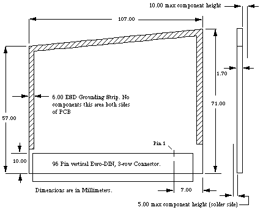

|
|
The Technical Note describes the unique aspects of the Macintosh Portable
Processor Direct Slot (PDS), including the severe limitations in its use.
The internal operating environment of the Macintosh Portable is unique within
the Macintosh family due to the additional design goals that are not normally
applied to other Macintoshes. In particular, two of these goals which limit
the use of the PDS are that the unit shall have a long (eight-hour) battery
operation life and that the unit shall meet all FCC regulations, including the
ability to operate on commercial aircraft.
[Oct 01 1989]
|
I've Got a Bad Feeling About This
Because of these design goals and the subsequent limitations on the use of the
PDS, you must severely limit your card design for the Macintosh Portable.
The first and foremost limitation is that the PDS has no power budget
for your card. Seeing that there are +12V and +5V connections on the PDS
connector, we all realize that you could draw some power directly from the
Macintosh Portable. Please don't do it. Instead, you should add your own
power supply (i.e., battery) to your board, thus controlling your own destiny
(or at least the destiny of your PDS board) and ensuring that the Macintosh
Portable has the longest battery life of any portable on the market. You are
the best judge as to whether or not your board needs to run continuously when
the Macintosh Portable is in sleep mode, therefore requiring a long current
life. You might find that the functionality of your board is only optimal when
the Macintosh Portable is in full-operating mode (or powered by an external
source), and in this case, you could conserve its current demands.
For those of you who are convinced that your product is so important that your
users will overlook a 50% reduction in their system operating time, Table 1
shows a worst-case power budget that could apply.
- The 50 mA maximum applies to the loads of the switched and unswitched +5 V supplies.
Table 1-Worst-Case Power Budget
The second limitation is that to meet FCC limits on radio frequency emissions,
no connector or cable attached to an expansion card can penetrate the case of
the Macintosh Portable.
Back to top
So Why Have a PDS Connector at All?
The decision to include the PDS connector is a recognition that we can't know
it all. Although it may seem that next to no power availability and absolutely
no custom cables to the outside world would block all possible products,
providing the expansion connector allows for that spark of genius for which
developers are known and the unanticipated product which usually results. So,
if after all these dire warnings you still want to proceed, following are the
available details (at least until Designing Cards and Drivers for the
Macintosh can be updated).
Back to top
Hang On
The PDS in the Macintosh Portable provides the microprocessor address, control,
data, clock power, and Macintosh Portable-specific lines for your expansion
card's use. Table 2 lists these signals, while Table 3 lists their
descriptions.
Table 2-Macintosh Portable 68000 Direct Slot Expansion Connector Pinouts
Table 3-Functional Description of the Macintosh Portable PDS Signals
The signals listed in Tables 2 and 3 are presented to your PDS card through a
Euro-DIN 96-pin socket connector on the main logic board.
Currently, you can order these Euro-DIN 96-pin connectors (which meet Apple
specifications) from: AMP Incorporated, Harrisburg, PA 17105.
Disclaimer: This listing for AMP Incorporated neither implies nor
constitutes an endorsement by Apple Computer, Inc. If your company supplies
these connectors and you would like to be listed, contact DTS at the address in
Technical Note #0.
Figure 1-96-Pin Plug Connector
Due to the limited space within the Macintosh Portable's case, your card is
limited to the size indicated in Figure 2. Apple highly recommends the use of
CMOS circuits to reduce the total power necessary for your card's operation.

Figure 2-PDS Expansion Card Dimensions
Back to top
References
Designing Cards and Drivers for the Macintosh
Guide to the Macintosh Family Hardware
Back to top
Downloadables
|

|
Acrobat version of this Note (472K)
|
Download
|
Back to top
|